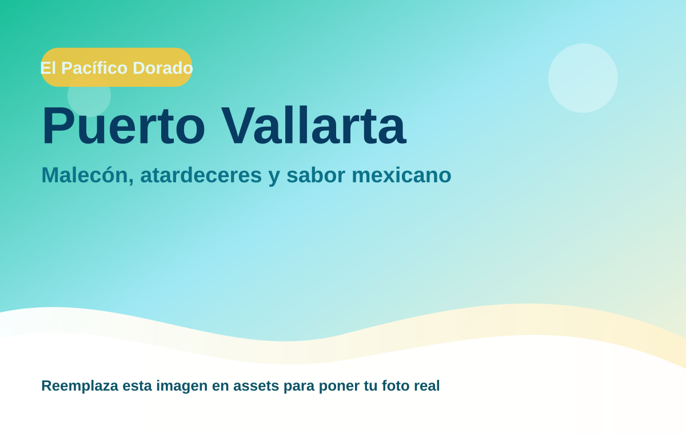
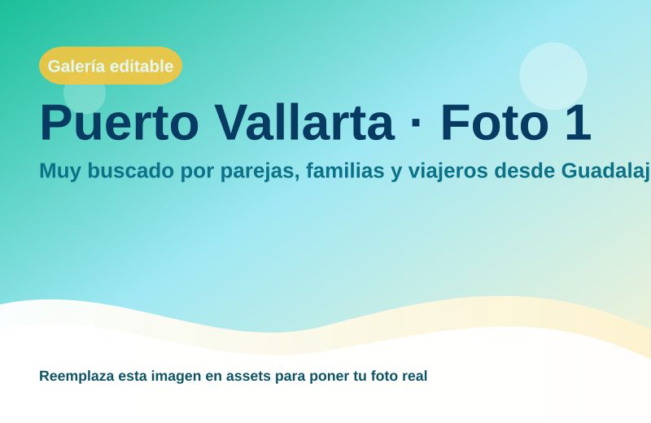
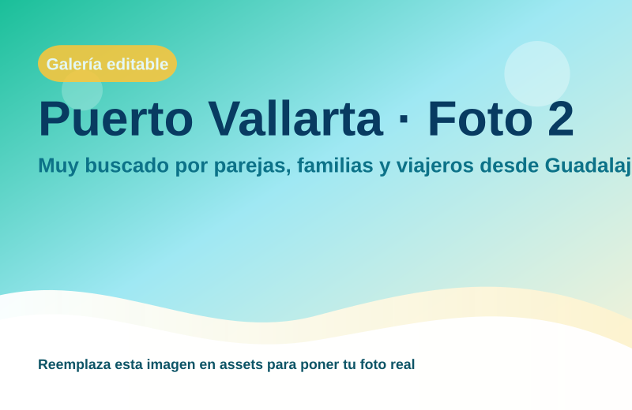

Puerto Vallarta
Muy buscado por parejas, familias y viajeros desde Guadalajara.

Pacífico mexicano con escapadas premium
Región: El Pacífico Dorado
Ideal para: Malecón, atardeceres y sabor mexicano
Usa esta ficha como base rápida. Puedes imprimirla en PDF desde el navegador o compartir el enlace.

